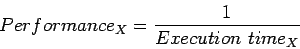
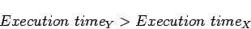
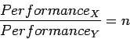
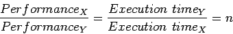

จงวิเคราะห์ว่าการเปลี่ยนแปลงข้างล่างเป็นการเพิ่ม Response Time หรือ Throughput หรือ ทั้งสองอย่าง
ส่วนใหญ่แล้วการลดเวลาตอบสนองจะเป็นการเพิ่มอัตราผลสำเร็จ ดังนั้นในกรณีแรกจะเป็นการปรับปรุงทั้งเวลาตอบสนองและอัตราผลสำเร็จ ทั้งสองตัววัด ในกรณีที่สอง จะไม่มีงานใดสามารถทำให้เกิดผลสำเร็จได้เร็วขึ้น มีเพียงแต่อัตราผลสำเร็จเท่านั้นที่เพิ่มขึ้น แต่ในกรณีที่มีงานเป็นจำนวนมาก และเกิดการรอรับบริการขึ้น การปรับปรุงในกรณีที่สองก็จะเป็นการปรับปรุงเวลาบริการด้วยเช่นเดียวกัน ดังนั้นในระบบคอมพิวเตอร์ส่วนใหญ่ในความเป็นจริงการเปลี่ยนเวลาตอบสนองหรืออัตราผลสำเร็จมักจะส่งผลกระทบต่อกันเสมอ
ประสิทธิภาพของคอมพิวเตอร์ X สามารถ แสดงได้โดย
|  | (4.1) |
พิจารณาคอมพิวเตอร์ X และ คอมพิวเตอร์ Y ถ้าคอมพิวเตอร์ X มีประสิทธิภาพสูงกว่าคอมพิวเตอร์ Y เราจะได้
| (4.2) |
|  | (4.3) |
เนื่องจากเวลาในการทำงานของคอมพิวเตอร์ Y มากกว่าคอมพิวเตอร์ X ดังนั้นคอมพิวเตอร์ X จึงเร็วกว่าคอมพิวเตอร์ Y
ในการออกแบบคอมพิวเตอร์ เรามักจะเปรียบเทียบประสิทธิภาพของคอมพิวเตอร์อย่างเป็นรูปธรรมเชิงตัวเลข เราจะใช้คำว่าคอมพิวเตอร์ X เร็วกว่าคอมพิวเตอร์ Y เท่ากับ  เท่า หมายถึง
เท่า หมายถึง
|  | (4.4) |
ถ้าคอมพิวเตอร์ X เร็วกว่าคอมพิวเตอร์ Y เท่ากับ  เท่า หมายถึงเวลาที่ใช้ประมวลผลบนคอมพิวเตอร์ Y ใช้เวลามากกว่า
เท่า หมายถึงเวลาที่ใช้ประมวลผลบนคอมพิวเตอร์ Y ใช้เวลามากกว่า  เท่าเมื่อเทียบกับ เวลาที่ใช้ประมวลผลบนคอมพิวเตอร์ X
เท่าเมื่อเทียบกับ เวลาที่ใช้ประมวลผลบนคอมพิวเตอร์ X
|  | (4.5) |